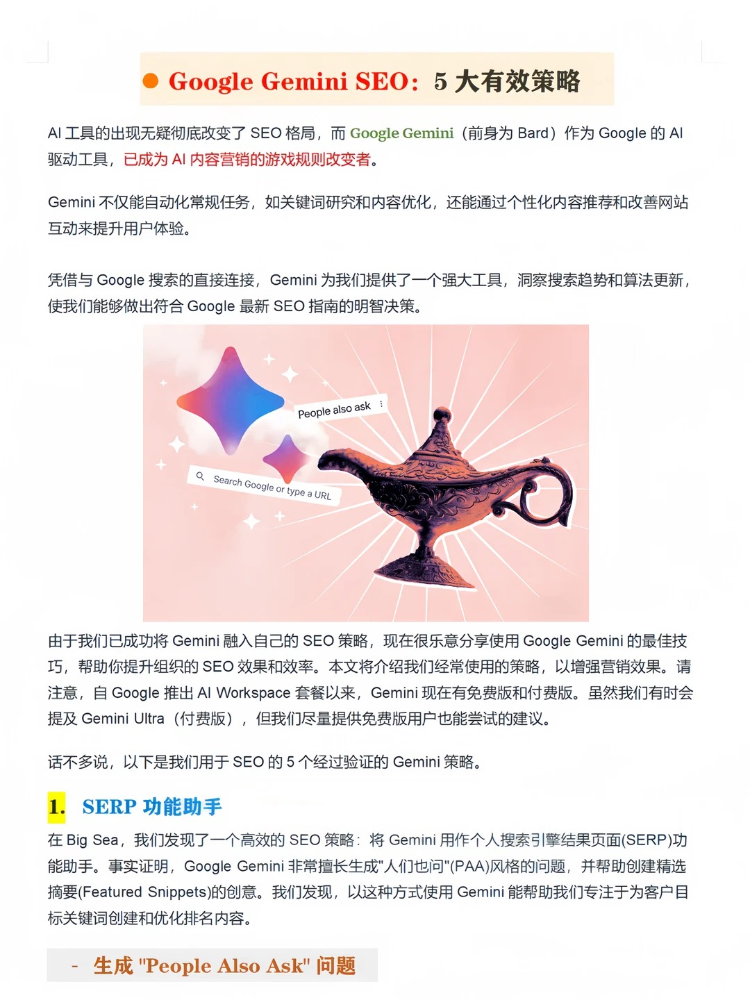
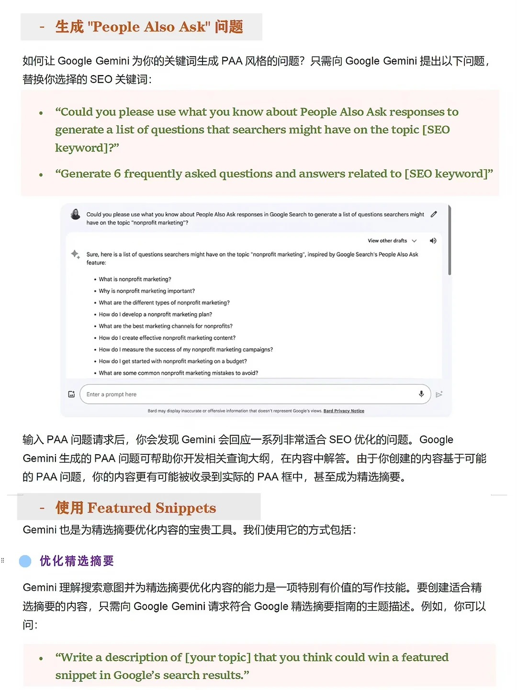
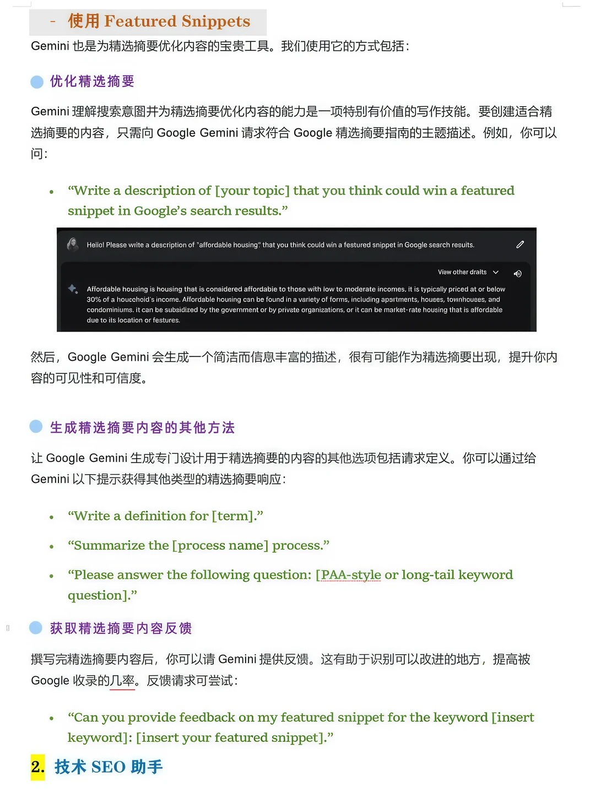
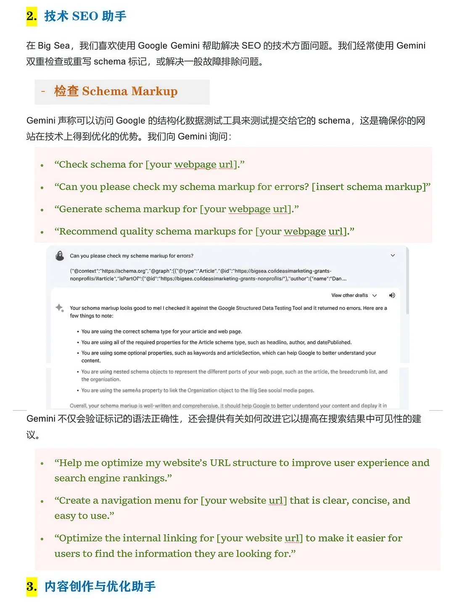
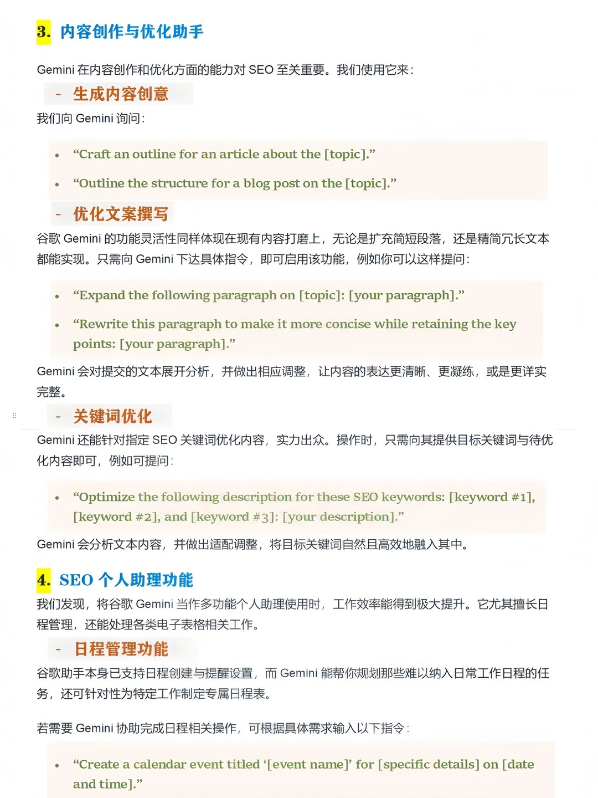

工具思路 · 獨立站 · 谷歌SEO
Gemini如何輔助獨立站SEO？從6張投稿圖片出發，將用戶問題研究、技術檢查與內容優化整理成可執行的工作流。
閱讀提醒：原圖含舊版界面及經驗性說法。AI建議、模型自述與流量截圖不能保證排名，也不代表本站業績。

Gemini + SEO：把AI作爲助手，而不是排名捷徑
獨立站的內容、關鍵詞和技術檢查工作，可以藉助AI提高效率。這篇文章根據投稿圖片整理Gemini輔助SEO的實用思路：研究用戶問題、完善答案、檢查技術結構、優化文案與組織工作。
原稿帶有Big Sea的敘述及舊版Bard界面，本文僅作內容整理，不表示這些案例或經歷屬於大讚廣告。圖片提到“五大策略”，但現有素材僅完整或部分展示了四類功能，本文不補造缺失的第五項。

一、SERP助手：先整理用戶可能會問的問題
從核心產品、目標市場與客戶類型出發，讓Gemini生成PAA風格的問題，作爲內容規劃的候選列表。可以這樣提問：
圍繞[主題]，爲[目標客戶]列出6個常見問題，按購買前、比較選擇與使用階段分類。區分真實檢索來源與推測，不要把推測標成Google實際PAA。
生成的問題不等於當前搜索結果中的“其他人還問了”。需要檢查目標市場的真實搜索結果、已有查詢數據和客戶反饋，再決定哪些問題值得單獨成文。

二、答案優化：定義、步驟與清楚的結論
可以讓AI輔助編寫簡潔定義、過程總結或長尾問題答案，再補充事實依據、適用條件和必要細節。開頭直接回答問題，後面解釋依據，讓讀者方便理解。
請用簡潔語言回答[問題]，先給直接結論，再列關鍵步驟與限制；只使用以下已覈實資料：[資料]。缺失信息請標註，不要編造。
也可要求它指出答案遺漏、術語歧義與證據不足之處。Gemini認爲答案適合精選摘要，不代表Google會採用；精選摘要由搜索系統選擇，不能通過一個提示詞或特定標記保證獲得。

三、技術SEO：檢查Schema、URL與內鏈
向AI提供頁面可見內容、現有JSON-LD和具體錯誤信息，可幫助查找語法與字段問題，並提出URL、導航和內鏈建議。例如：
請檢查以下JSON-LD的語法和字段，並與頁面可見內容比對；列出你實際檢查了什麼、不能驗證什麼，不要聲稱調用了未使用的工具。
圖片中的模型回覆聲稱使用過Google測試工具，但僅憑對話文本不能確認工具已被實際調用。應自行使用Google富媒體搜索結果測試或Schema.org驗證器檢查，再覈對頁面內容。
有效Schema不保證排名或富結果。調整URL前檢查舊鏈接與重定向；導航和內鏈應幫助用戶找到相關信息，而不是添加大量重複關鍵詞鏈接。

四、內容助手：大綱、擴寫與精簡
讓Gemini生成初步大綱，再由業務人員補充實際參數、案例、體驗與來源。擴寫應增加有價值的信息，精簡則刪除重複和套話，不能讓模型填充未經驗證的事實。
針對[主題]與[客戶問題]提出文章大綱。標出需要我們提供的產品資料、測試結果與經驗；將已有段落改得更簡潔，但保留限制條件和事實來源。
關鍵詞優化可以輔助檢查主題覆蓋，但不要爲了詞頻機械插詞。文章應滿足獨立搜索需求，避免與已有頁面重複而沒有新增價值。

五、工作組織：把建議變成可執行計劃
原稿還展示了日程助手思路。可以讓AI整理內容排期、審覈清單與任務負責人，但生成一個日程文本不等於已經創建日曆事件。
是否能夠操作日曆、表格或其他應用，取決於實際版本、連接權限與支持能力。無需連接應用，也可先輸出計劃供團隊審覈；不要把客戶敏感數據或未公開資料隨意上傳。
流量案例怎麼解讀，效果怎麼驗證？
封面顯示約13.5K點擊、1.06M展示與1.3%CTR，但缺少完整日期範圍、頁面、查詢和實驗背景。僅憑趨勢圖不能證明Gemini帶來增長，也不能把這組數值當作本站業績或效果承諾。
封面“Gemini3”的字樣屬於原圖，本文采用通用Gemini工作流，不依賴某個版本。舊截圖中的產品名稱、套餐與能力也不作爲當前使用說明。
- 記錄目標問題、市場、頁面與修改時間。
- 保留調研來源和人工審覈記錄。
- 用Search Console觀察實際展示、點擊與查詢變化。
- 結合有效詢盤、訂單與內容投入判斷價值。
- 考慮其他同期變化，不把所有增長歸因於AI。
Gemini可以幫助減少重複勞動，但不能替代SEO基礎、專業經驗與事實覈查。繼續閱讀AI SEO博客質控流程與獨立站SEO詳解，或查看谷歌SEO與排名優化服務。
官方參考：Google精選摘要說明、富媒體搜索結果測試、生成式AI內容指南。